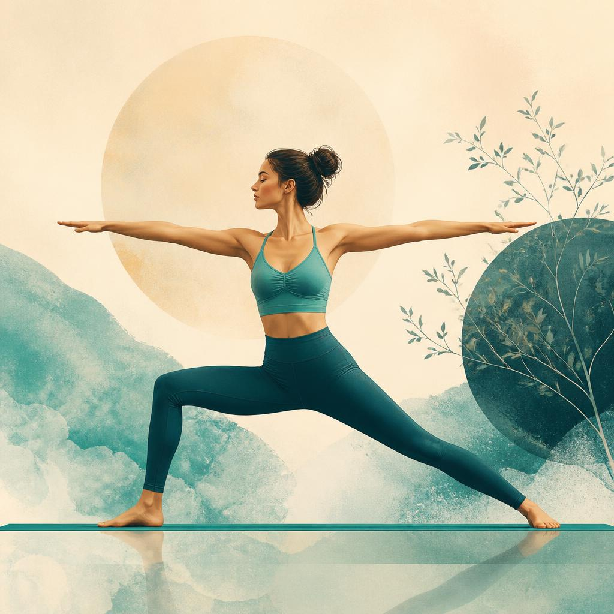

TREE POSE
Vrksasana
This pose is a standing balance posture that builds stillness and focus. Rooted through one leg, the sole of the other foot presses into the inner thigh or calf, strengthening balance and concentration, and cultivating a sense of grounded calm.